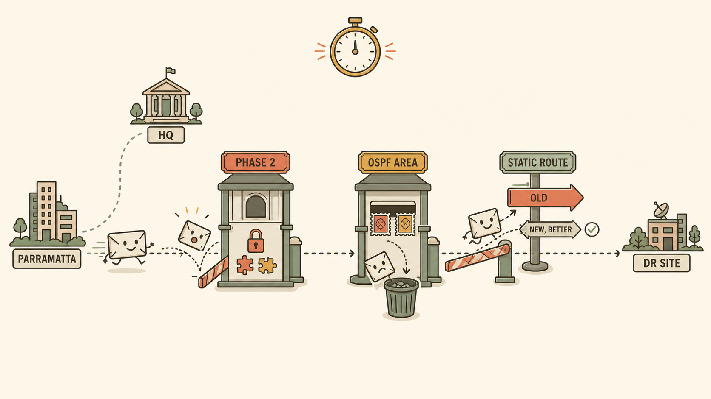
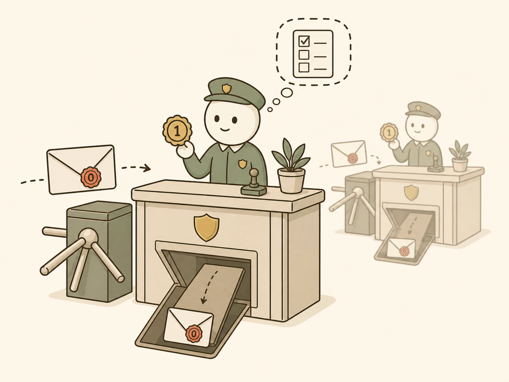
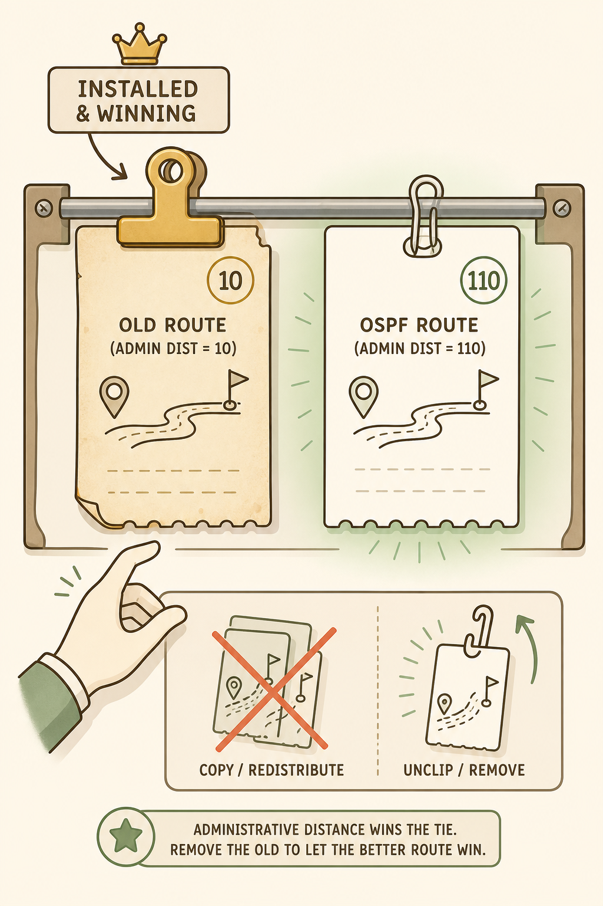
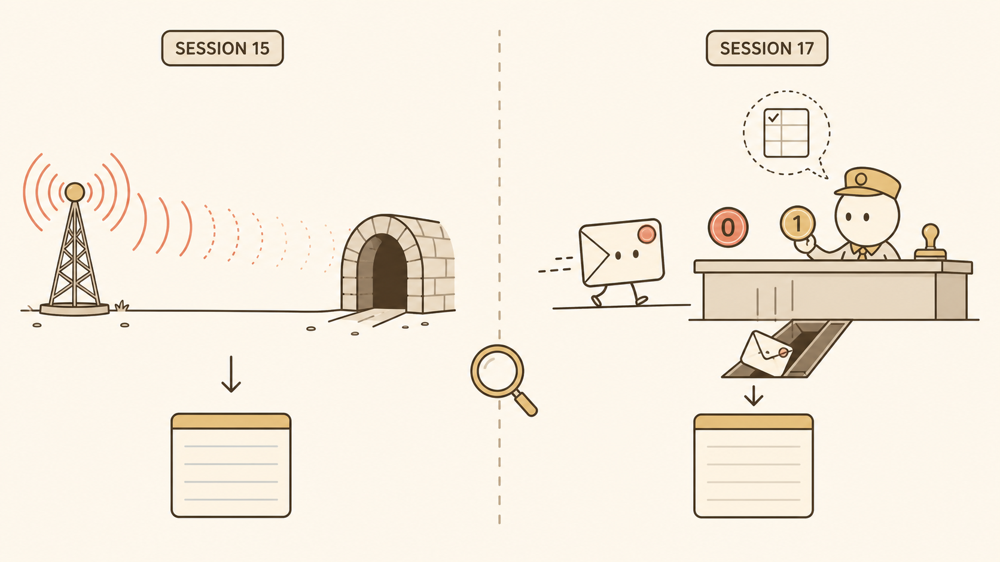

Flat minimalistic vector illustration, wide horizontal composition (16:9), cream/off-white background (#faf5e9), coral (#e0654a) and muted gold (#b8933a) accent colors, sage green (#a7d8b0-ish) highlights, soft brown outlines, no gradients, no photorealism, clean bold line work, generous whitespace, professional but storybook-like — functions as an educational diagram. Depict a single small envelope-shaped packet icon (simple, friendly, slightly anthropomorphic with small dot eyes, no text on it) traveling left to right along a dotted road, starting at a small labeled building icon "PARRAMATTA" on the far left and ending at a small labeled building icon "DR SITE" on the far right, with a third smaller building "HQ" positioned above the road roughly one-third of the way along, connected by a faint dashed line indicating an alternate path. Along the road, place three distinct checkpoint gate icons, evenly spaced, each drawn as a small tollbooth/turnstile shape in soft brown outline: Checkpoint 1 labeled small tag "PHASE 2" showing a padlock icon with two mismatched puzzle-piece-shaped keys that don't fit together, the packet bouncing off it with a small motion-line; Checkpoint 2 labeled small tag "OSPF AREA" showing a small mail-sorting slot with two different colored stamps (one coral, one gold) that don't match, the packet shown falling into a "discarded" bin icon beside it rather than passing through; Checkpoint 3 labeled small tag "STATIC ROUTE" showing a small signpost with two arrows pointing different directions, one arrow (labeled faintly "OLD") drawn thicker and more prominent than the other (labeled faintly "NEW, BETTER"), with the packet shown being redirected onto the thicker/older arrow despite a small green checkmark hovering over the thinner "better" arrow. Show a small clock icon above the whole scene subtly suggesting time pressure (a stopwatch shape, no numbers). No dense technical labels beyond the three short tags mentioned; no IP addresses, no CLI text, no additional clutter. Mood: methodical, slightly tense but ultimately solvable, editorial-diagram quality. This image should make the viewer immediately recall "three checkpoints, each with a different invisible reason for rejecting the packet" without needing to re-read the session notes.

Flat minimalistic vector illustration, near-square composition (4:3), cream background (#faf5e9), soft brown outlines, coral and muted gold accents, no gradients, no photorealism, clean geometric shapes, generous spacing, storybook-diagram hybrid style. Depict a simple front-desk / mailroom scene as a metaphor for a router interface receiving an OSPF hello packet. On the left, a small envelope icon (the hello packet) approaches a stylized reception desk/turnstile drawn in soft brown line work, viewed from a slight front-three-quarter angle. The envelope has a small circular wax-seal-style stamp on its corner colored coral, with a tiny "0" mark inside it (representing Area 0.0.0.0) — keep it abstract/iconic, not literal text. Standing at the desk is a small friendly gatekeeper character (simple geometric shape, no detailed face beyond two dot eyes) holding up a matching circular stamp template colored muted gold with a tiny "1" mark inside it (representing Area 0.0.0.1) for comparison, positioned right next to the incoming envelope's stamp so the two circles are clearly different colors/marks side by side. Because the two stamps visibly don't match, show the envelope falling through a trapdoor icon directly beneath the desk into a very plain, unlabeled void/bin — no alarm bells, no red X marks, no dramatic rejection stamps — emphasizing "quietly discarded, not noisily rejected." In the background, faint and small, show a second identical desk scene mirrored (representing the other router), reinforcing that both sides are doing this same silent check simultaneously. Add one small dashed-line thought bubble above the gatekeeper showing a simple checklist icon with a single checkmark slot, to suggest this is the very first, single check performed before anything else — no further icons or processing steps shown, keeping the "checked first, then nothing else happens" idea visually clean. No visible text, no CLI, no IP addresses. Mood: calm, procedural, quietly final — the opposite of a dramatic error.

Flat minimalistic vector illustration, portrait-leaning composition (3:2), cream background, sage green and muted gold accents, soft brown outlines, no gradients, no photorealism, clean bold line work, professional storybook-diagram aesthetic. Depict a small stylized restaurant order-ticket rail (the kind that holds paper tickets on clips in a kitchen), viewed straight-on, mounted on a soft-brown-outlined board. On the rail, show two ticket icons clipped side by side: the left ticket is old, slightly yellowed/faded (muted gold tone), clipped with a bold, heavy-looking clip icon, labeled with a small abstract "10" badge in the corner (representing administrative distance 10) — keep it iconic/abstract, not literal readable text beyond the number. The right ticket is crisp, white/cream, newer-looking, clipped with a thinner, lighter clip icon, labeled with a small abstract "110" badge in the corner (representing OSPF's distance 110). Both tickets show a small identical route-icon doodle (a simple road-with-destination-pin icon) so it's visually clear they're competing for the SAME destination. Draw a small spotlight/highlight glow (soft sage green) around the OSPF ticket to show it is objectively the better/cheaper route, while a small subtle "priority" arrow or crown-like icon points instead to the OLD ticket, indicating it wins anyway purely because it was clipped first and never removed. In the lower portion of the image, add a small separate vignette: a hand-icon reaching toward the old ticket with a "no" gesture (a simple circle-slash icon) hovering over an alternate action — a small "copy" icon (representing "redistribute") crossed out faintly, next to a small "unclip/remove" icon left un-crossed and slightly emphasized, visually reinforcing "copying it elsewhere doesn't remove the original; you have to actually take it down." No CLI text, no IP addresses beyond the abstract distance badges. Mood: quietly absurd but instructive — the visual should communicate "an old habit nobody cancelled, silently overriding a better new choice every time."

Flat minimalistic vector illustration, wide composition (16:9), cream background, soft brown outlines, coral and muted gold accent colors, no gradients, no photorealism, clean geometric shapes, storybook-diagram style, split into two clearly mirrored halves by a thin vertical dashed line down the center. LEFT HALF (labeled with a small subtle tag "SESSION 15"): a simple broadcast-tower icon on one side attempting to send a small radio-wave/signal icon across a gap toward a tunnel-shaped icon, but the signal-wave visibly dissipates and fades into nothing partway across the gap, before it ever reaches the tunnel — illustrating the hello dying at the SENDER because there's no shared medium. RIGHT HALF (labeled with a small subtle tag "SESSION 17"): mirror the same simple envelope-icon-approaching-a-desk scene from image 2 (small envelope with a stamp, approaching a small gatekeeper desk), but here the envelope clearly ARRIVES intact at the desk and is only then quietly dropped through a trapdoor after the stamp-comparison — illustrating the hello dying at the RECEIVER, after arrival. Both halves should end with an identical small "empty ledger/empty list" icon at the bottom (a simple rectangle with faint horizontal lines but no entries) to visually reinforce that both scenarios produce the exact same visible outcome — an empty neighbor table — despite the completely different point of failure. Add one small magnifying-glass icon centered on the dashed dividing line, subtly suggesting "look closer, they're not the same problem." No CLI text, no readable labels beyond the two small session tags. Mood: clarifying, slightly wry — the visual joke is "twins that turn out to be strangers."